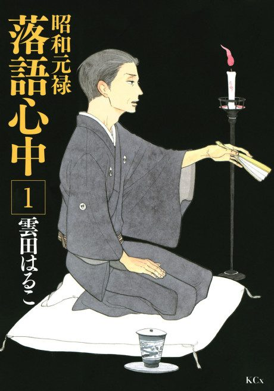

Showa Genroku Rakugo Shinju
昭和元禄落語心中
The anime takes the story to Done.
8.4AniList score
—Animeter, no votes yet
25episodes, 2 seasons
2 seasons, 25 episodes
In airing order. Episode numbers on this site count straight through every season, so season 2 starts at episode 14.
1
2016 · TV
Showa Genroku Rakugo Shinju
Episodes1–1313 ep
2
2017 · TV
Descending Stories: Showa Genroku Rakugo Shinju
Episodes14–2512 ep
Sources: AniList